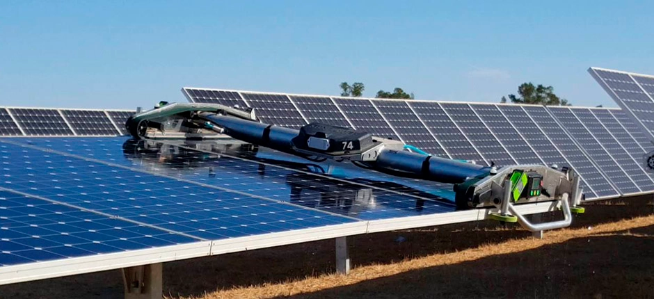
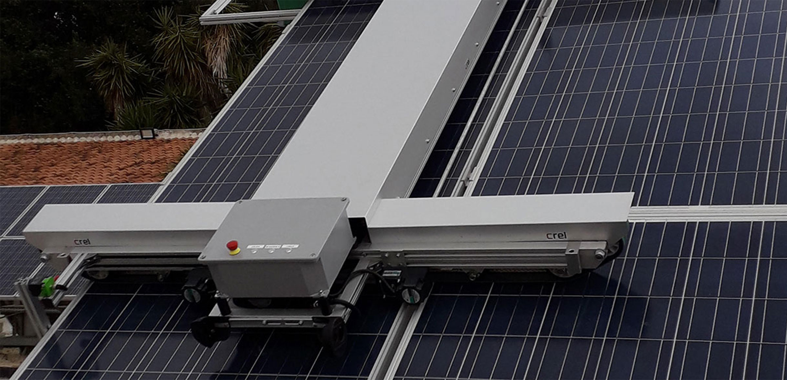

Solar Auto automacão em placas solares
Sobre o Projeto
Missão e Visão:
Nossa missão é fornecer soluções inovadoras que promovam a sustentabilidade e a eficiência energética. Acreditamos que a manutenção automatizada é o próximo passo para a otimização da energia solar, contribuindo para um futuro mais limpo e sustentável.
História do Projeto:
O projeto surgiu da necessidade observada em grandes fazendas solares, onde a limpeza manual dos painéis é impraticável e custosa. Combinando engenharia mecânica, elétrica e software, desenvolvemos um robô capaz de operar autonomamente, garantindo que os painéis solares permaneçam limpos e eficientes com o mínimo de intervenção humana.
Estudo de Caso
A sujeira acumulada nos painéis solares afeta diretamente sua capacidade de geração de energia. Métodos tradicionais de limpeza envolvem mão de obra intensiva e consumo significativo de água, especialmente em instalações de grande escala. Esses fatores tornam a limpeza manual cara e inviável em muitos casos, além de representar riscos para os trabalhadores. A necessidade de uma solução automatizada, segura e eficiente era clara
O robô de limpeza vertical foi projetado para eliminar a necessidade de trabalho manual na limpeza de painéis solares, garantindo que as superfícies dos painéis permaneçam limpas e maximizem a geração de energia. O sistema é capaz de operar autonomamente em intervalos programados, e sua integração com monitoramento remoto permite que os operadores acompanhem o progresso da limpeza e o estado dos painéis.Sendo as principais características da solução:
-
Locomoção Vertical
O robô se move verticalmente ao longo dos painéis, cobrindo toda a superfície de forma uniforme.
-
Limpeza Automatizada:
As escovas rotativas removem sujeiras sem danificar os painéis.
-
Reducao de Custo e de Tempo
Com a nescessidade de apenas uma pessoa para operar o robo, e reduzindo o tempo total de lavagem
Exemplos Existentes


Tecnologia e Funcionamento
O robô de limpeza utiliza uma combinação de sensores, motores e sistemas de escovação rotativa para remover sujeira e detritos dos painéis solares. Equipado com sensores ultrassônicos, o robô detecta o início e o fim de cada painel, garantindo uma cobertura completa. Suas rodas emborrachadas aderem à superfície dos painéis, permitindo movimento suave e seguro.Tendo como os principais componentes
-
Sistema de Limpeza Automatizada:
Escovas rotativas de cerdas macias são utilizadas para remover sujeiras, poeira, areia e detritos dos painéis, sem arranhar ou danificar as superfícies
O robô é equipado com um sistema de jatos de água de baixa pressão para remoção de sujeiras mais difíceis, como excrementos de pássaros ou partículas mais grossas.
-
Eficiência Energética:
O robô é alimentado por baterias de íons de lítio recarregáveis, que garantem várias horas de operação contínua.
-
Controle Inteligente e Automação:
O coração do robô é um microcontrolador, que coordena todas as funções, desde o movimento das escovas até o controle dos sensores de proximidade e do sistema de jatos de água.
Peças e Componentes
Abaixo está uma lista das principais peças e componentes necessários para a construção do robô de limpeza. Cada item foi cuidadosamente escolhido para garantir eficiência e durabilidade em ambientes externos.
Motores de Passo NEMA 17
Orçamento Estimado: R$384
Estrutura em Alumínio e Peças Para Montagem
Orçamento Estimado: R$314
Escovas de MicroFibra
Orçamento Estimado: R$92
Bomba de Água de Alta Pressão 12V
Orçamento Estimado: R$ 254
Sensores de Proximidade
Orçamento Estimado: R$144
MicroControlador
Orçamento Estimado: R$ 971
Baterias de Lítio 105ah 12v
Orçamento Estimado: R$682/Módulo
Sistema de Comunicação e Controle
Desenvolvimento Própio
Orçamento Total: R$2844
Benefícios
Economia de Água
O processo tradicional de limpeza de painéis solares em grandes fazendas solares costuma utilizar uma quantidade significativa de água, especialmente em regiões áridas ou com alta concentração de poeira. Estima-se que, em uma instalação solar média, cada painel exige aproximadamente 5 a 10 litros de água por ciclo de limpeza, dependendo do nível de sujeira e das condições ambientais.
Mão de Obra Reduzida
A necessidade de trabalhadores para realizar a limpeza manual é eliminada, resultando em uma economia direta nos custos de contratação e gerenciamento de equipes. Para grandes fazendas, o custo anual de mão de obra para a limpeza pode representar até 20% dos custos operacionais.
Eficiência Energética:
A limpeza automatizada resulta em painéis solares que estão sempre em sua máxima eficiência, o que pode aumentar a produção de energia em até 45%. Isso representa uma maior receita e menor dependência de manutenção corretiva.
Sustentabilidade Ambiental
O uso eficiente de recursos, como água e energia, faz do robô de limpeza uma solução ecologicamente sustentável. Em áreas onde a água é escassa, a economia de água é um benefício significativo, ajudando a preservar esse recurso essencial para a agricultura e o consumo humano.
Economia de Água por ano
5.500
Aumento de eficiência de até
40
%
Redução de custo de até
20
%
Galeria de Imagens
Aqui estão algumas imagens e renderizações do modelo 3D do robô de limpeza de placas solares. Veja o projeto de diferentes ângulos e entenda melhor como ele foi projetado.


Galeria de Imagens